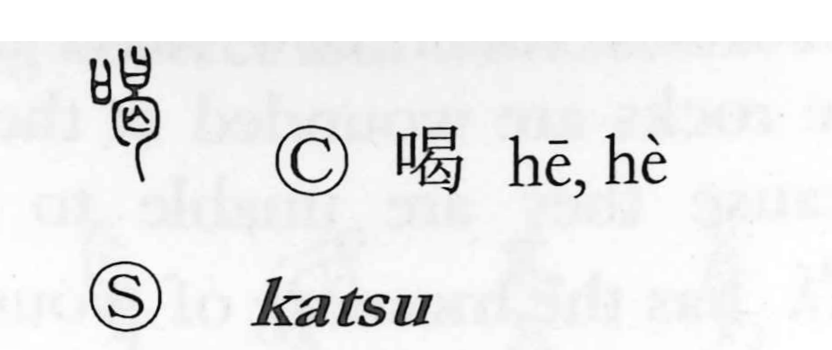

喝

Kun: | On: katsu
to scold ・ to shout at ・ to threaten
Explanation
Shirakawa treats 喝 as a phono‑semantic character: the phonetic 曷 provides the sound katsu. He explains 曷 as 日—not the sun, but a covenant vessel holding a written petition to the gods—combined with a sign for the bones of the dead, conjuring the act of fervently invoking a cursing spirit to lay a spell on someone. With that background, 喝 denotes the fierce, intense voice of such prayer, a cutting cry that naturally came to be felt as the sound of scolding, shouting, or menacing someone.